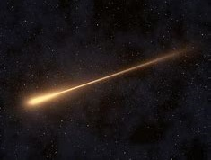

Exploring the universe
Our website, Astronomy Wonders, is dedicated to bringing the marvels of the universe right to your fingertips. Whether you're a seasoned astronomer or just beginning your journey into the cosmos, this site aims to enlighten and inspire. With detailed articles, captivating images, and the latest news from space exploration, we strive to make the vast expanse of the universe accessible to everyone. Our mission is to foster a community of curious minds who share a passion for understanding the stars, planets, and galaxies that make up our incredible universe.
Stars are born from vast clouds of gas and dust called nebulae. Under the force of gravity, these clouds collapse, and as the material condenses, the core heats up and ignites nuclear fusion. This process powers the star, causing it to shine brilliantly. Stars play a crucial role in the universe by producing light and heat, which are essential for the survival of life on planets. They also forge heavier elements in their cores, which are later released into space when the stars explode as supernovae. These elements become the building blocks for new stars, planets, and even life, creating a continuous cycle of birth and rebirth in the cosmos.
Check out NASA website for more information about astronomy.
